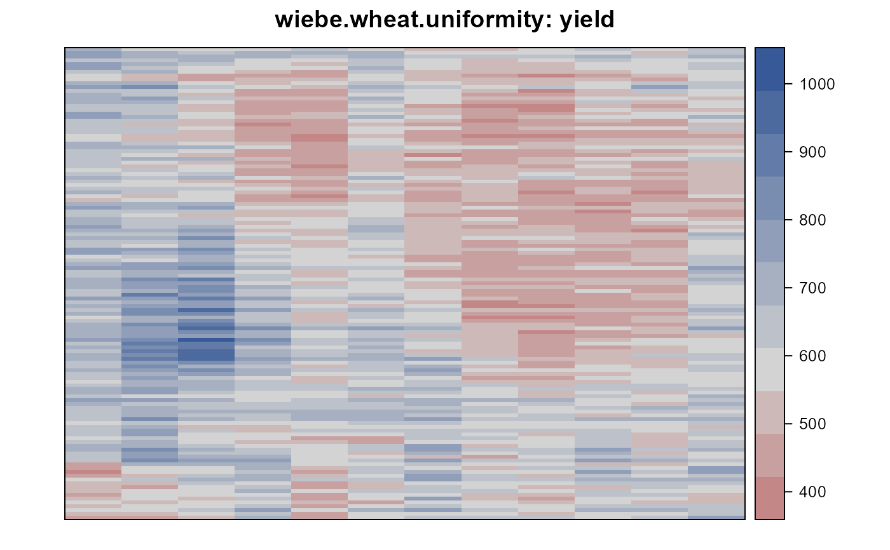
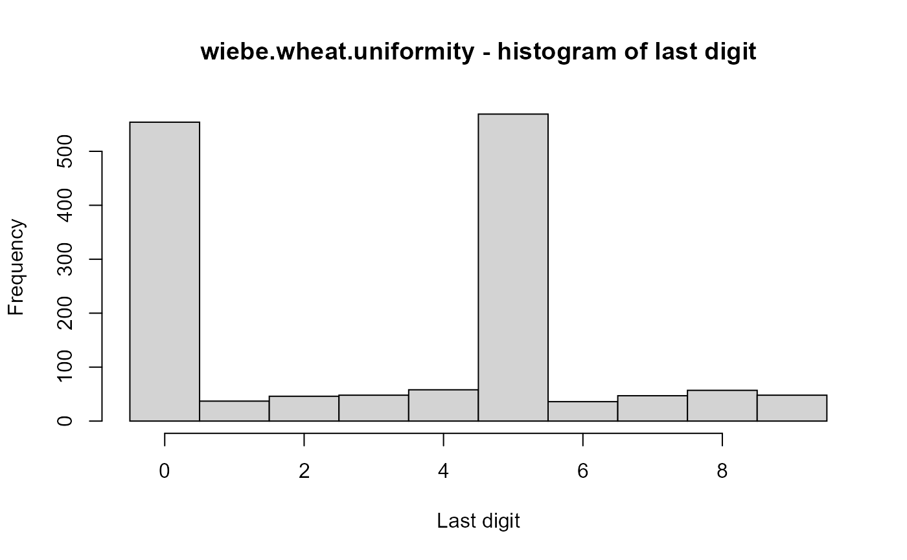
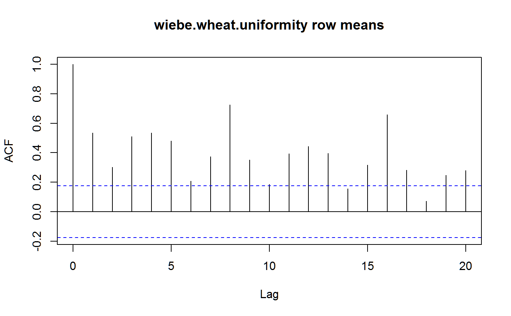
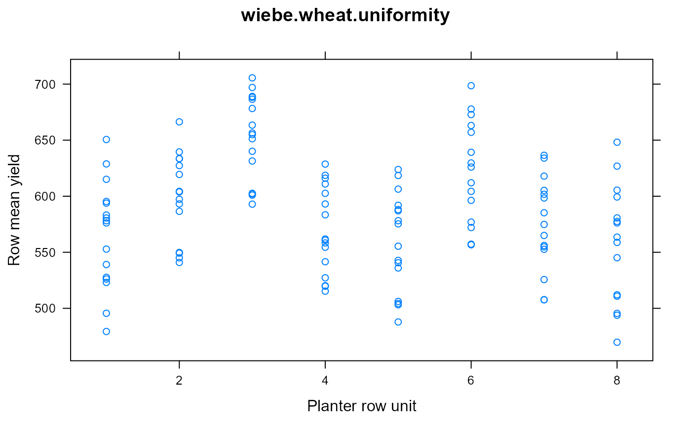
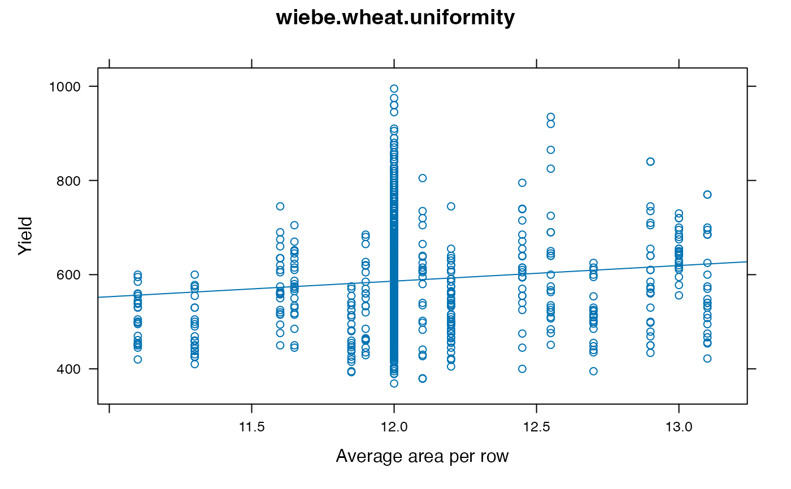

Uniformity trial of wheat
wiebe.wheat.uniformity.RdUniformity trial of wheat at Aberdeen, Idaho, 1927.
Format
A data frame with 1500 observations on the following 3 variables.
rowrow
colcolumn (series)
yieldyield in grams per plot
Details
Yield trial conducted in 1927 near Aberdeen, Idaho. The crop was Federation wheat (C.I. no 4734). Plots were seeded on April 18 with a drill that sowed eight rows at a time. Individual rows were harvested in August and threshed with a small nursery thresher. Some authors recommend analyzing the square root of the yields.
Rows were 15 feet long, 1 foot apart.
Field width: 12 columns * 15 feet = 180 feet wide.
Field length: 125 rows * 12 in = 125 feet
Source
Wiebe, G.A. 1935. Variation and Correlation in Grain Yield among 1,500 Wheat Nursery Plots. Journal of Agricultural Research, 50, 331-357. https://naldc.nal.usda.gov/download/IND43968632/PDF
References
D.A. Preece, 1981, Distributions of final digits in data, The Statistician, 30, 31--60. https://doi.org/10.2307/2987702
Wilkinson et al. (1983). Nearest Neighbour (NN) Analysis of Field Experiments. J. R. Statist. Soc. B, 45, 151-211. https://doi.org/10.1111/j.2517-6161.1983.tb01240.x https://www.jstor.org/stable/2345523
Wiebe, G.A. 1937. The Error in grain yield attending misspaced wheat nursery rows and the extent of the misspacing effect. Journal of the American Society of Agronomy, 29, 713-716.
F. Yates (1939). The comparative advantages of systematic and randomized arrangements in the design of agricultural and biological experiments. Biometrika, 30, 440-466, p. 465 https://archive.org/details/in.ernet.dli.2015.231848/page/n473
Examples
library(agridat)
data(wiebe.wheat.uniformity)
dat <- wiebe.wheat.uniformity
libs(desplot)
desplot(dat, yield~col+row,
aspect=125/180, flip=TRUE, # true aspect
main="wiebe.wheat.uniformity: yield") # row 1 is at south

# Preece (1981) found the last digits have an interesting distribution
# with 0 and 5 much more common than other digits.
dig <- substring(dat$yield, nchar(dat$yield))
dig <- as.numeric(dig)
hist(dig, breaks=0:10-.5, xlab="Last digit",
main="wiebe.wheat.uniformity - histogram of last digit")

table(dat$col, dig) # Table 3 of Preece
#> dig
#> 0 1 2 3 4 5 6 7 8 9
#> 1 61 0 0 0 0 64 0 0 0 0
#> 2 67 0 0 0 0 58 0 0 0 0
#> 3 65 0 0 0 0 60 0 0 0 0
#> 4 66 0 0 0 0 59 0 0 0 0
#> 5 55 0 0 0 0 70 0 0 0 0
#> 6 54 0 0 0 0 71 0 0 0 0
#> 7 69 0 0 0 0 56 0 0 0 0
#> 8 65 0 0 0 0 60 0 0 0 0
#> 9 9 10 7 9 19 19 13 16 13 10
#> 10 13 18 12 10 11 17 14 9 8 13
#> 11 13 9 16 13 16 18 8 6 16 10
#> 12 17 0 11 16 12 17 1 16 20 15
# Wilkinson (1983, p. 152) noted that an 8-row planter was used which
# produced a recurring pattern of row effects on yield. This can be seen
# in the high autocorrelations of row means at lag 8 and lag 16
rowm <- tapply(dat$yield, dat$row, mean)
acf(rowm, main="wiebe.wheat.uniformity row means")

# Plot the row mean against the planter row unit 1-8
libs("lattice")
xyplot(rowm~rep(1:8, length=125),
main="wiebe.wheat.uniformity",
xlab="Planter row unit", ylab="Row mean yield")

# Wiebe (1937) and Yates (1939) show the effect of "guess rows"
# caused by the 8-row drill passing back and forth through
# the field.
# Yates gives the distance between strips (8 rows per strip) as:
# 10.2,12.4,11.7,13.4,10.6,14.2,11.8,13.8,12.2,13.1,11.2,14,11.3,12.9,12.4
# First give each row 12 inches of growing width between rows
tmp <- data.frame(row=1:125,area=12)
# Distance between rows 8,9 is 10.2 inches, so we give these two
# rows 6 inches (on the 'inside' of the strip) and 10.2/2=5.1 inches
# on the outside of the strip, total 11.1 inches
tmp$area[8:9] <- 6 + 10.2/2
tmp$area[16:17] <- 6 + 12.4/2
tmp$area[24:25] <- 6 + 11.7/2
tmp$area[32:33] <- 6 + 13.4/2
tmp$area[40:41] <- 6 + 10.6/2
tmp$area[48:49] <- 6 + 14.2/2
tmp$area[56:57] <- 6 + 11.8/2
tmp$area[64:65] <- 6 + 13.8/2
tmp$area[72:73] <- 6 + 12.2/2
tmp$area[80:81] <- 6 + 13.1/2
tmp$area[88:89] <- 6 + 11.2/2
tmp$area[96:97] <- 6 + 14.0/2
tmp$area[104:105] <- 6 + 11.3/2
tmp$area[112:113] <- 6 + 12.9/2
tmp$area[120:121] <- 6 + 12.4/2
dat <- merge(dat, tmp)
# It's not clear if Wiebe used border rows...we delete them
dat <- subset(dat, row > 1 & row < 125)
# Wiebe (1937) calculated a moving average to adjust for fertility
# effects, then used only the OUTER rows of each 8-row drill strip
# and found 21.5 g / inch of space between rows. We used all the
# data without correcting for fertility and obtained 33.1 g / inch.
xyplot(yield ~ area, dat, type=c('p','r'),
main="wiebe.wheat.uniformity",
xlab="Average area per row", ylab="Yield")

coef(lm(yield ~ area, dat))[2]
#> area
#> 33.1033
# 33.1